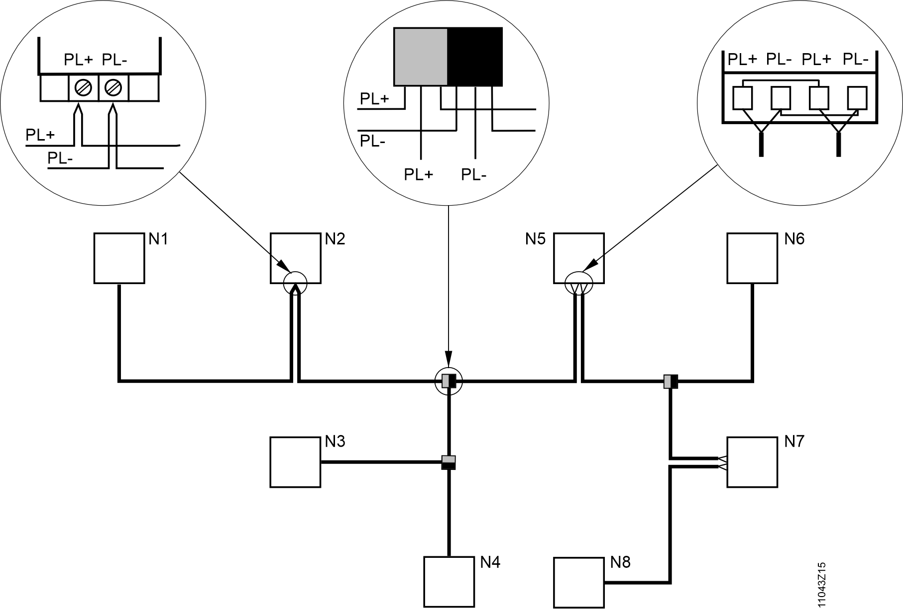
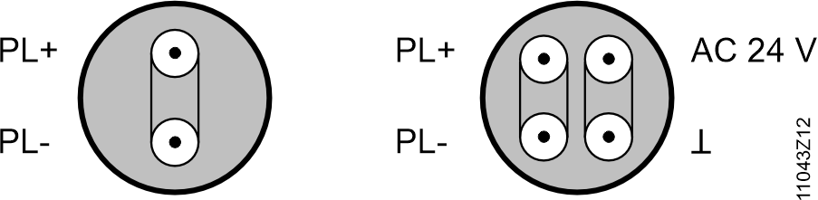

KNX 的安装和技术细节
- The KNX PL-Link bus must be inside the building.
- The KNX PL-Link bus allows communication from PXC4, PXC5, and PXC7 automation stations to a maximum of 64 devices on the KNX bus.
- The number of devices is limited by the number of BACnet objects on the automation station, see System functions and configurations and the available bus power. Bus power is incremented during engineering with the ABT Site tool.
- The KNX PL-Link bus basic version comprises one cable and two stranded bus wires.
- The PXC4, PXC5, and PXC7 automation station has one internal bus power supply of 50 mA.
- The KNX PL-Link is physically based on the KNX bus (Konnex) .
- In KNX PL-Link networks area/line couplers and IP routers are not allowed.
- Interconnection of automation stations via KNX PL-Link is not admissible. The connection is done exclusively via Ethernet switches or MS/TP.
- The polarity of the KNX PL-Link bus conductors must be correct (KNX terminals + and –).
- The PXC4, PXC5, and PXC7 automation stations do not support third party devices integrated via S-Mode (ETS engineering).
Bus power supply
KNX 总线通信需要总线电源。使用节流电压 DC 29 V。
Internal KNX PL-Link power supply
自动化站具有内部总线电源。默认情况下它是打开的。
PXC4, PXC5, PXC7:50 mA 可为大约 5 个 KNX PL-Link 设备供电
重要提示：如果使用外部电源，则必须通过 ABT 站点工具关闭内部电源。
External bus power supply
如果 50 mA 的电源不足以满足所连接设备的电源需求，则必须通过 ABT 站点工具关闭内部总线电源，并更换为外部总线电源单元 (PSU)。
电源装置80,160, 320, and 640 mA在专卖店有售。必须计算设备的总电源以确定适当的电源大小。遵守数据表中相应的详细信息。
640 mA 电源单元足以为 KNX 总线上的 64 个设备供电，每个设备的平均功率需求为 10 mA。
Parallel operation:
- Parallel operation of external bus supplies with the internal bus supply of an automation station is NOT allowed.
- In theory, parallel operation of external bus supplies is possible. However, check if the specific PSU is allowed to be operated in parallel with other PSUs.
- Depending on the type, a minimum cable distance is required between two PSUs.
Siemens power supply units:
我们推荐以下西门子电源装置用于 KNX 网络：
描述 | 力量 | 细节 |
|---|---|---|
|
5WG1 125-4AB23, short designation RL125/23 | 80 mA | 带有集成油门。 |
5WG1 125-4CB23, short designation JB 125C23 | 80 mA | 带有集成油门。 |
5WG1 125-1AB02, short designation N125/02 | 160 mA | 带有集成油门。 |
5WG1 125-1AB12，简称 N125/12 | 320 mA | 带有集成油门。 |
5WG1 125-1AB22，简称 N125/22 | 640 mA | 带有集成油门。 |
Data:
- Operating voltage AC 120…230 V, 50…60 Hz.
- Bus supply output DC 29 V (21…30 V, throttled)
Bus topologies
64 devices on one line:
一条线路（也包括主线路）上最多可安装 64 个具有 KNX PL-Link 的设备。类型混合没有任何限制。
- There is no need to calculate the bus load number E for up to 64 devices.
- The maximum of 64 devices is also valid when devices requiring less power are used.
Permitted bus topologies:
Permitted bus topologies are: Tree, line, and star topologies. These topologies can be mixed as needed. However, ring topologies are not allowed.
Tree topology:
The tree topology is preferred if a large network must be created.
分支和连接变体：

N1 .. N8 Devices:
1 | 带螺丝端子的设备 |
2 | T 分支设有巴士总站 |
3 | 带笼式弹簧端子的设备 |
Cables
Bus lines:
总线（= 双绞线）通过 PL+（红色）和 PL–（黑色）连接。

Bus cable selection:
根据特定国家/地区的产品选择总线电缆。遵守“技术数据KNX PL-链接”部分中的指示值。
AC 24 V 现场电源可以通过同一根电缆（2 x 2 个站）或单独的电缆提供。
KNX 主页上提供了推荐的总线电缆：
https://www.knx.org/knx-en/for-professionals/certified-products/?productfamily=Cable
Recommended cable types:
- 1 x 2 x 0.8 mm (e.g. Belden YE00819 or YE00905 - non-halogen).
- 2 x 2 x 0.8 mm (e.g. Belden YE00820 or YE00906 - non-halogen).
Bus cable screening:
总线电缆without screen是允许的。无需连接可用于总线电缆的屏蔽。
如果预计 KNX 总线上会出现干扰，请使用带屏蔽的电缆。按照标准安装规则连接屏幕。
Bus cables specified by KNX:
网络中距离和线路长度的指示是针对 KNX 指定的总线电缆而设计的。
Admissible cable lengths:
遵守以下距离：
由主站提供内部电源的网络
| PXC4, PXC5, PXC7 |
|---|---|
|
设备与内部电源之间的距离 | 最大限度。 80 m（260 英尺） |
设备之间的距离 | 最大限度。 80 m（260 英尺） |
一根线上所有线的总长度 | 最大限度。 80 m（260 英尺） |
带外部电源的网络 (PSU)
|
内部电源关闭时，距离 PSU 到 PXC | 分钟。 0米 |
距离设备到下一个 PSU | 最大限度。 350 m（1150 英尺） |
两个并行操作的 PSU 之间的距离 分钟。对于“总线电源”部分中推荐的西门子电源模块，0 m | 分钟。 200 m（650 英尺） |
设备之间的距离 | 最大限度。 700 m（2300 英尺） |
一根线上所有线的总长度 | 最大 1000 米（3280 英尺） |
Polarity:
重要提示：总线导线必须 NOT 反转（KNX 端子 + 和 –）。
- At least one supply (internal or external) is required for each line and max. two supplies (external) are allowed per line.
- Install the power supply unit as close to the network center as possible to achieve maximum line size.
- The distance between the device and the next neighboring PSU may not exceed 350 m (1100 ft).
Even if the power demand from the devices does not require it, two power units must be used depending on the line length.
Commissioning
Wiring KNX bus polarity:
调试前检查总线接线，确保总线极性未互换（KNX 端子 + 和 –）。
Operating voltage:
检查工作电压接线，确保设备连接到 AC 24 V 或 AC 230 V（根据技术设备信息）。仅在检查后才施加工作电压。
Bus power supply:
接通工作电压后，检查自动化站或PSU 的总线电源是否可用。
Technical data KNX PL-Link
KNX bus:
|
传输介质（总线电缆） | TP（双绞线） |
波特率 | 9.6 kbps（针对 TP 固定） |
总线极性 | PL+、PL–（不可互换） |
总线终端电阻 | 不需要 |
Communication signal:
通信信号对称地传输，即作为两条总线线路之间的电压差（而不是作为与接地电位的电压差）。 PL+ 和 PL– 之间电压前面的符号决定信号值 0 和 1。
KNX bus cable:
|
电缆类型 | 2 线，绞合（一对线） 或 2x2 线，绞合 或螺旋四边形 |
线径 | 分钟。 0.8 毫米 (AWG20) 最大限度。 1.0 mm (AWG18) |
线路电阻 | 20 … 75 Ω/km |
比容量 | 10 kHz 时为 10 …100 nF/km |
比介电常数 | 10 kHz 时为 450 …850 µH/km |
屏幕 | 不需要 |